MaptimeLA presents:
Let's learn about PostgreSQL
and PostGIS
#maptimeLA
Thank You
to Arup for the space!
PostgreSQL is a free, open source, relational database system.
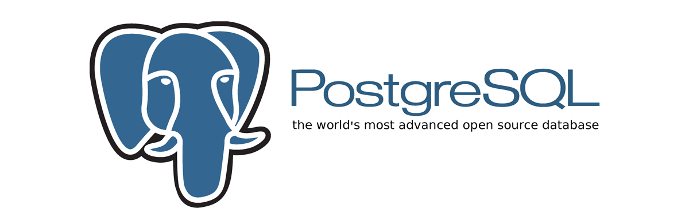
Go to EDB and get the 9.6.6 installer for your version.
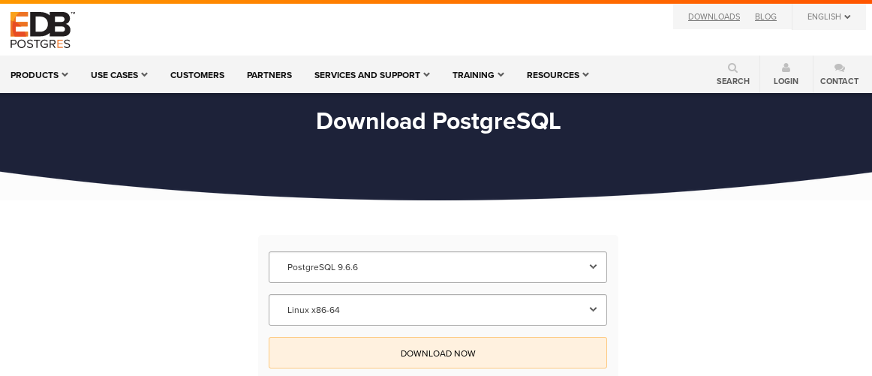
Screenshots are from Linux, but options will be similar for other operating systems.
For the most part, you want to accept the defaults during the install.
Accept the default directory:
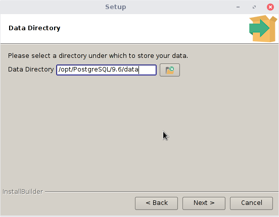
Set the password to postgres:
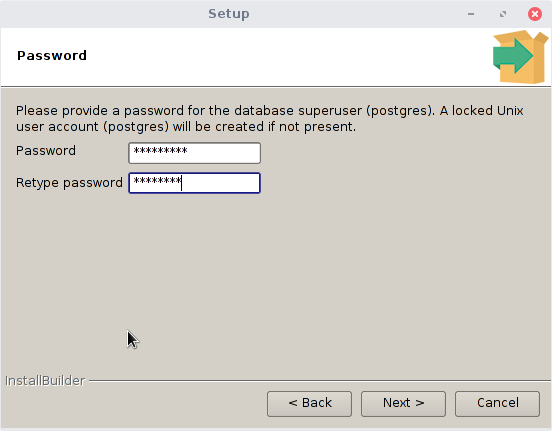
Accept the default port number (unless you know you run something else on that port):
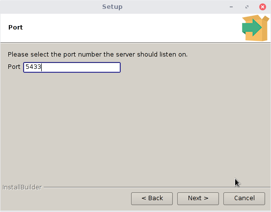
Accept the default database locale:

Launch Stack Builder:
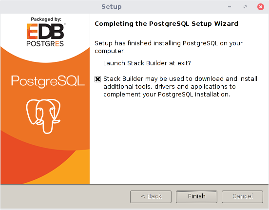
Pick your just installed PostgreSQL:
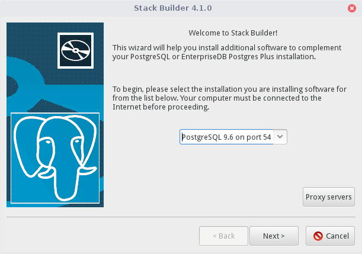
Select PostGIS from the Spatial Extensions:
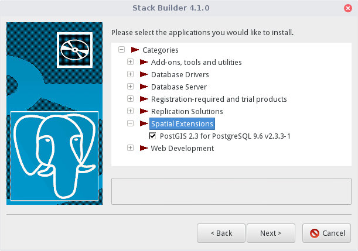
Accept defaults all the way through.
That's it!
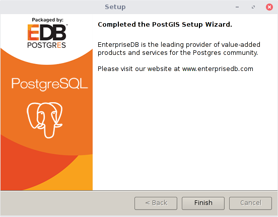
Open pgadmin and connect to your database server. It may already be connected, if not add your details used during the install.
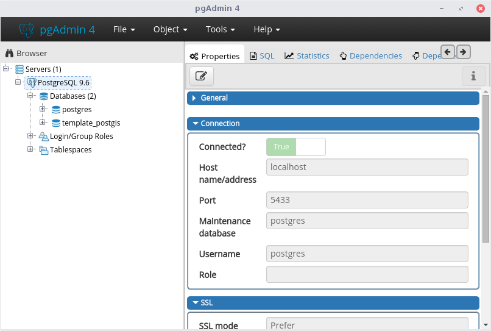
Create a new database by right clicking on Databases and selecting Create, Database:
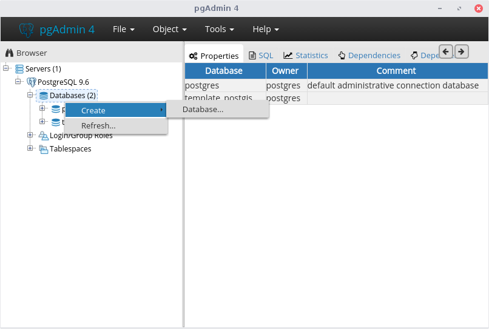
We will name the new database maptime and the owner will be postgres:
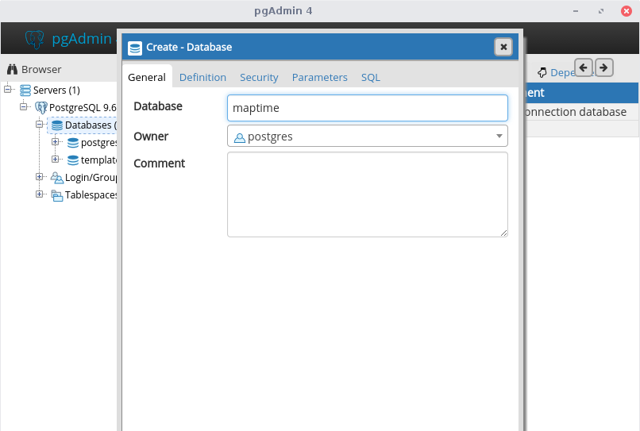
On the Definition tab, select the template template_postgis & click Save:
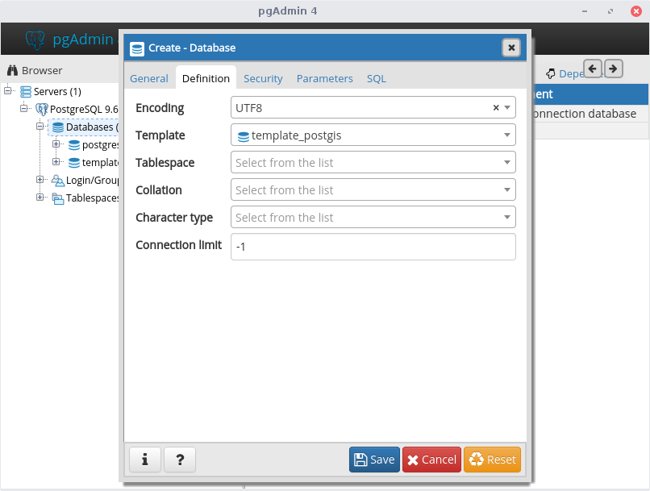
If you see this error, you probably clicked on the template_postgis database. Just right click on template_postgis database, disconnect, & try again:
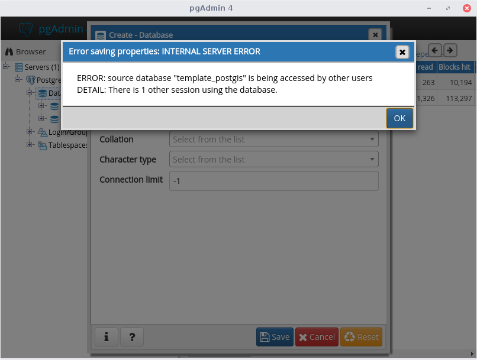
Time for QGIS!
QGIS is a free geographic information system software for making maps and analyzing spatial data.
Open the maptime.qgs file. This is a map containing 2 shapefiles:
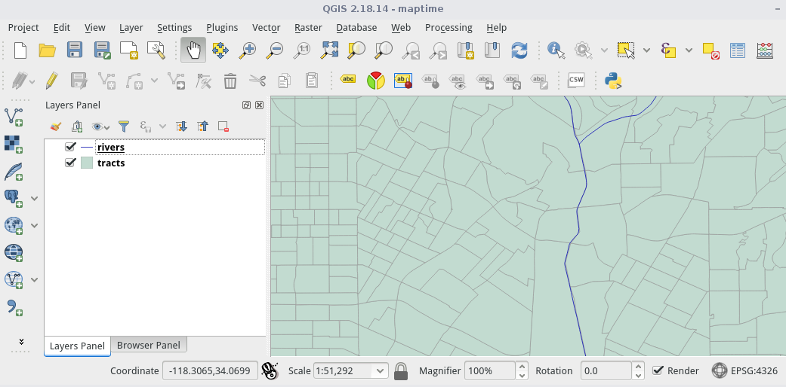
Click on the elephant icon:
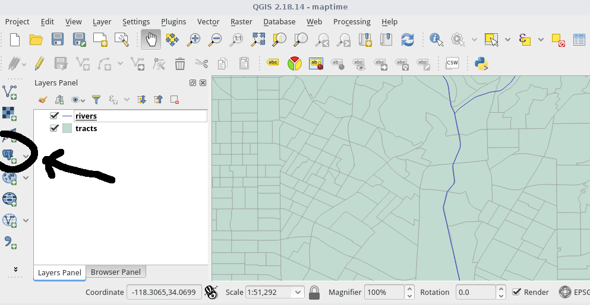
You'll use the parameters from your install:
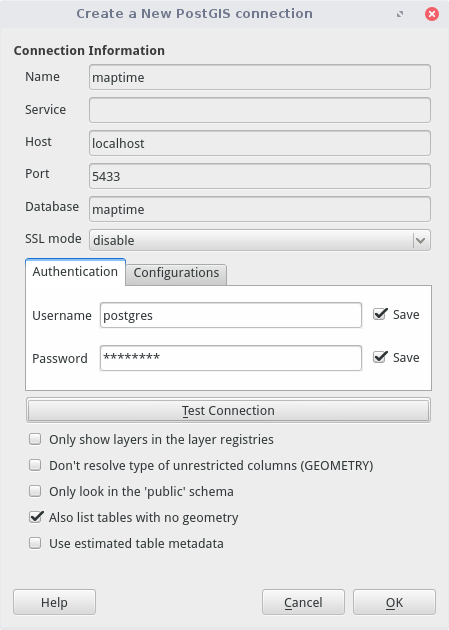
We'll use DB Manager to add data. Go to Database, DB Manager:
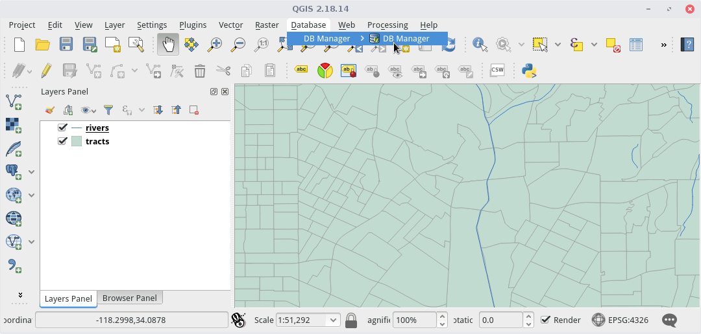
Select the public schema in your maptime database, and click on the import icon (down arrow):
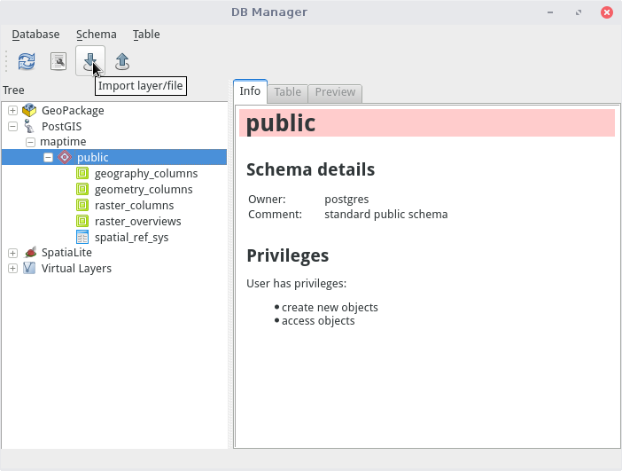
Import your rivers. The table name is what the data layer will be called in postgreSQL:
You'll notice the term SRID. This is the spatial reference system. You can look up the codes on the EPSG site
Now import the tracts:
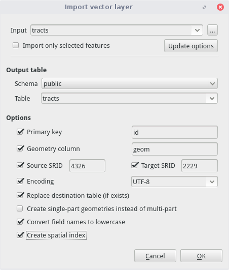
Next, explore your postGIS data in QGIS:

And in pgAdmin:
First, let's figure out how many tracts the LA River flows through in QGIS. To start, let's isolate the LA River in our rivers layer:
Then, we will do a select by location to select tracts that intersect the river:
On the map you should see the tracts selected. When we open the attribute table, we find out there are 67 tracts touching the LA River:
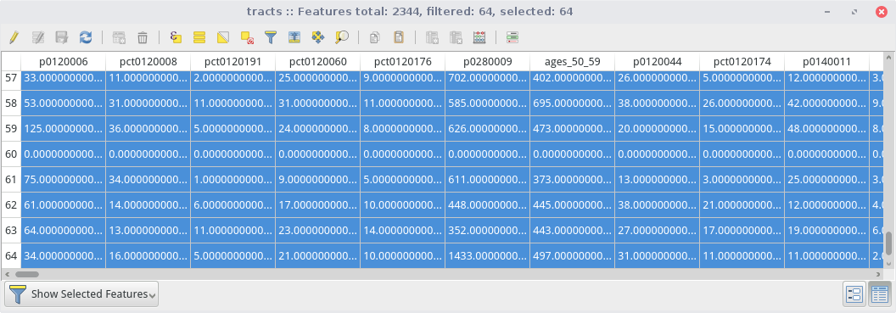
With your maptime database open, go to Tools, Query. Copy the following code from the GitHub ReadMe to the query window:

Let's break this down.
SELECT extracts a subset of data from our table
count creates a count field
ST_Intersects is an intersect command (here used on the 2 geometry fields)
Click the lightning bolt to execute your query. The results appear at the bottom:
If we want to use this table often, you could make a VIEW table by adding some text:
View tables are accessible outside of pgAdmin and the query is run every time the View is referenced (in case your base data changes):
Now let's look at tracts. The field names don't mean much, but we have a lookup:
Try to formulate your own query using a field. For example, let's select tracts w/ >500 vacant housing units:
2010 Census data isn't changing, so let's make that a permanent table using CREATE TABLE instead of a VIEW:
Open QGIS and examine your vacant_units TABLE:
The last example was something you could do easily in QGIS, let's get more complex. First let's create a buffer of the LA River:
Please join us for our next
#maptimeLA meeting!
Until then, chat w/ us on Slack!